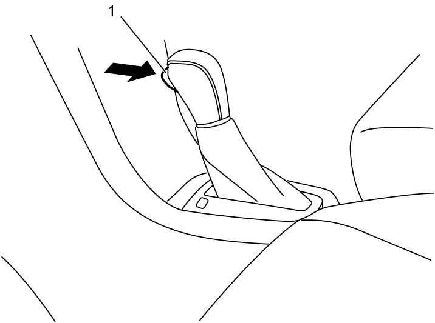

5F
| Shift Lock Solenoid Inspection |
When ignition is “ON” with brake pedal depressed, select lever button (1) can be pushed and select lever can be shifted from P range.

 "Expand image")
Check that when ignition is “OFF” or “ACC”, the select lever button cannot be pressed regardless of the status of the brake light switch, and the lever cannot be moved to any gear other than P.